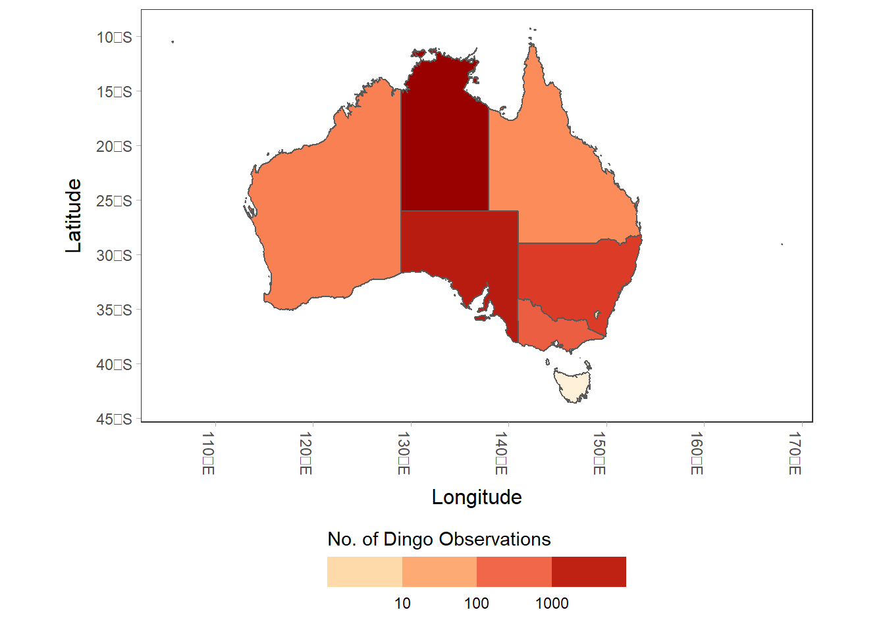
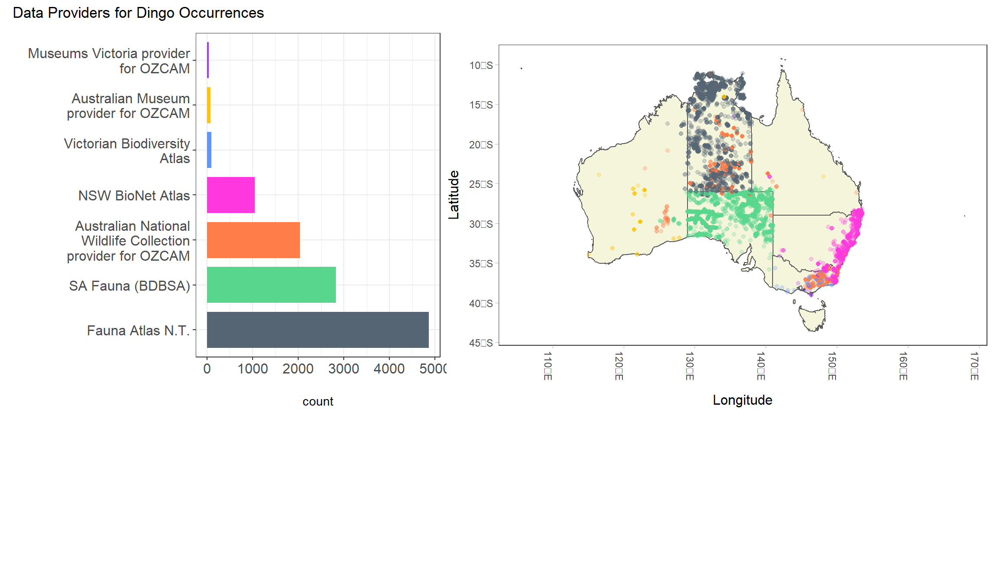
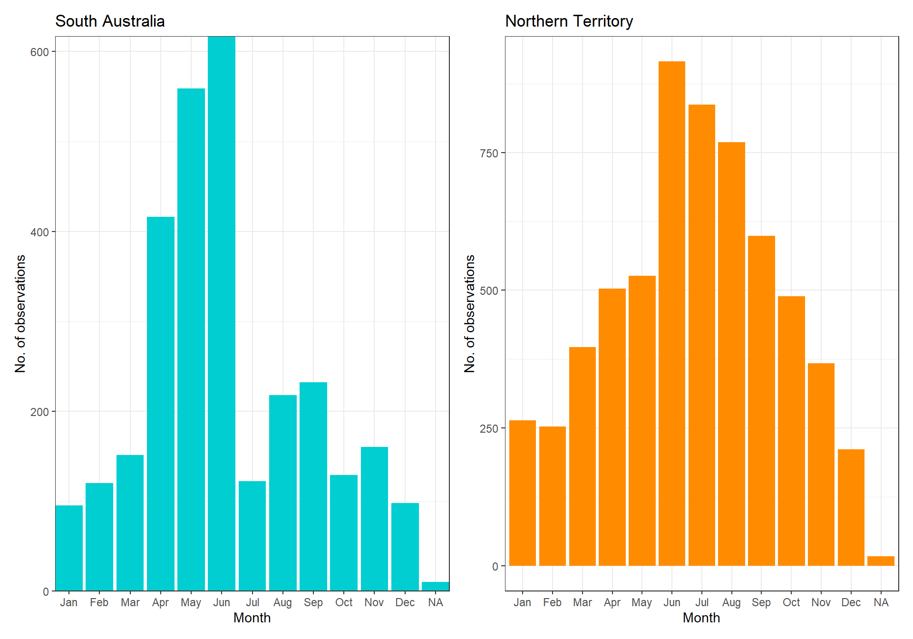
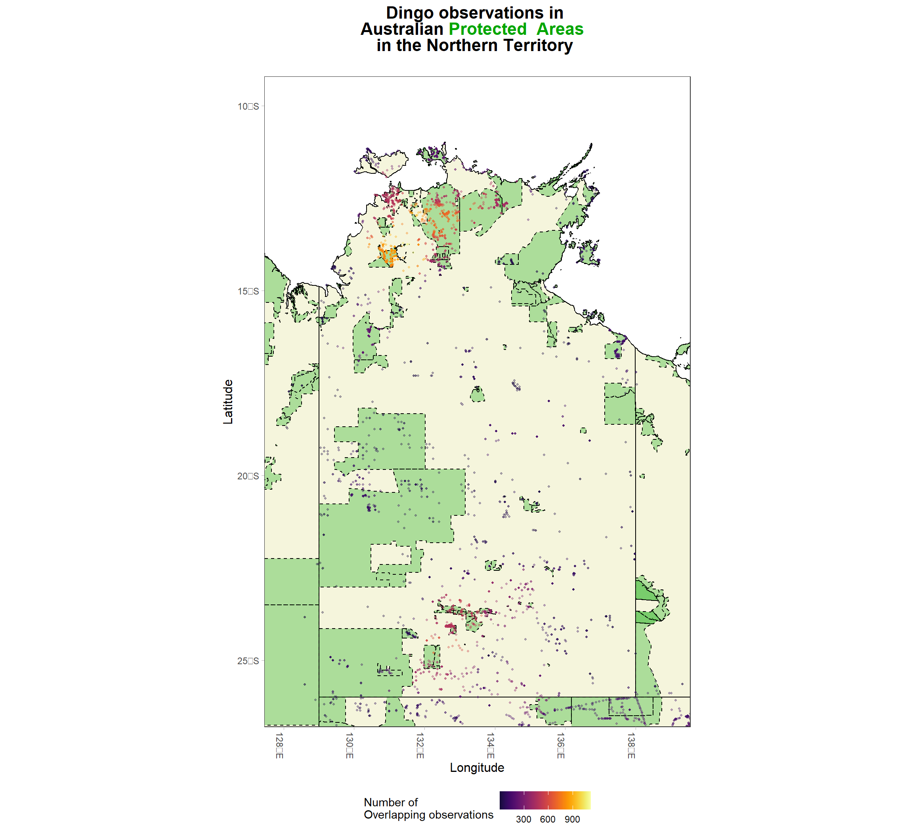

library(galah)
library(tidyverse)
library(ozmaps)
library(sf)
library(ggplot2)
library(patchwork)
library(lubridate)
library(here)
library(rmapshaper)
library(ggpointdensity)
library(glue)
library(ggtext)An exploration of dingo observations in the ALA
Internationally, the dingo is one of Australia’s most recognised species. However, the debate continues in Australia whether dingoes are considered pests or a protected native species.
Dingoes have had a major negative impact on the agricultural industry, increasing sheep and livestock loss and affecting farmers’ welfare. In response, dingo populations have been controlled by baiting and shooting techniques. The Dingo Fence, a wire fence made to protect from the loss of sheep for the sheep industry, is also used to control dingo populations in Australia. Stretching from Queensland to South Australia, the Dingo Fence is the longest fence in the world (5,614 km). Between landowners and the government, the annual cost to control wild dog and dingo populations is estimated at ~$30 million annually across Australia.
Effects of control programs, along with additional threats of habitat loss, have diminished dingo populations. Dingoes are currently listed as Vulnerable to extinction under the International Union of Nature Conservation’s Red List of Threatened Species. Bush Heritage Australia.
Since its construction 80 years ago, the Dingo Fence has perhaps unintentionally shaped the landscape of Australia and showed the importance of apex predators like dingoes in ecosystems. The dingo fence has acted as a natural experiment, demonstrating that apex predators like dingoes are key contributors to healthy Australian ecosystems. On the side where dingoes remain present, there is more vegetation because there are fewer kangaroos eating or tramping sensitive plants. There are also fewer invasive species like cats and foxes where dingoes are present, improving native biodiversity and increase numbers of native mammals & marsupials. The difference between sides of the fence is so distinct that you can even see it from space!
Despite this evidence, historical and current legislation over the control of dingoes has had dramatic effects on dingo populations across Australia. In this article, we investigate observations of dingoes within the Atlas of Living Australia (ALA) to understand how historical and current differences in attitudes towards dingo conservation affects their data.
Download data
First let’s install the required packages.
Which states have the highest counts of dingoes?
First let’s find how many dingo observations there are in the ALA.
galah_call()|>
galah_identify("canis familiaris")|>
galah_filter(raw_vernacularName == "Dingo")|>
galah_apply_profile(ALA)|>
atlas_counts()# A tibble: 1 × 1
count
<int>
1 11010Next, we can get the number of observations by each state. Within the Atlas dingoes fall under the class Canis familiaris which is also the taxonomic name of wild and domesticated dogs. Hence, we have to filter records that were only recorded with the name “Dingo”.
This can potentially mean that we have missing observations because data collectors may not always specify the name “Dingo”, even when it was. We’ll also add an ALA “profile”, a set of data quality filters by the ALA to remove unreliable observations.
dingo_counts <- galah_call()|>
galah_identify("canis familiaris")|>
galah_filter(raw_vernacularName == "Dingo")|>
galah_group_by(cl22)|>
galah_apply_profile(ALA)|>
atlas_counts()We’ll arrange the counts in descending order.
dingo_counts |>
arrange(desc(count))# A tibble: 7 × 2
cl22 count
<chr> <int>
1 Northern Territory 6147
2 South Australia 2927
3 New South Wales 1092
4 Victoria 412
5 Western Australia 130
6 Queensland 80
7 Australian Capital Territory 4Here we can see the Northern Territory and South Australia hold the highest number of observations where in some states have very limited observations.
Let’s see this visually on a choropleth map.
We’ll start by getting our base map of Australia.
aus <- ozmap_data(data = "states")Join the counts by state to our base map.
state_counts <- aus %>%
full_join(dingo_counts, by = c("NAME" = "cl22"))Here we log-transform which standardises the data when there very low numbers and very high numbers (and not much in-between), that you want to analyse or visualise
logged_counts <- state_counts |>
mutate(log = log10(count))|>
replace_na(list(log = 0))We can plot our choropleth map.
choropleth_map <- ggplot() +
geom_sf(data = logged_counts,
mapping = aes(fill = log,)) +
scale_fill_distiller(palette = "OrRd",
direction = 1,
labels = c("10", "100", "1000"),
guide = guide_colorsteps(direction = "horizontal",
title = "No. of Dingo Observations",
title.position = "top")) +
theme_bw() +
theme(axis.text.x=element_text(angle = -90, hjust = 0),
panel.background = element_rect(fill = "white", size = 2),
panel.grid.major = element_line(colour = NA),
plot.title = element_text(face = "bold", size = 16, hjust = 0.5, line = 1),
axis.ticks = element_line(colour = "grey70", size = 0.2),
axis.title.y = element_text(size = 12, vjust = 3),
axis.title.x = element_text(size = 12, vjust = -1)) +
theme(legend.position = "bottom", legend.key.width = unit(12, 'mm')) +
labs(x = "Longitude", y = "Latitude")
choropleth_map
Who are the main data providers?
Why is it that majority of dingo observations are in the Northern Territory? Are people seeing them mainly in the Northern Territory, or are there some data providers that provide more records of dingo observations than others?
To understand who is currently recording dingoes, we decided to break down our top data providers of the dingo into the atlas. This may give us an idea of the absence of data of who could be recording dingoes but isn’t.
So, let’s see this visually on a map. To do so, we can run the following code to download dingo occurrences.
To view only the main data providers, we’ll filter to only providers that have provided more than 5 observations of dingoes
dingo_dataproviders_count <- galah_call()|>
galah_identify("canis familiaris")|>
galah_filter(raw_vernacularName == "Dingo")|>
galah_group_by(dataResourceName)|>
galah_apply_profile(ALA)|>
atlas_counts()
counts_fitered <- dingo_dataproviders_count |>
filter(count > 5)Now we’ll filter our data.frame with occurrences so that only the observations from each data provider with greater than 5 observations (saved in counts_filtered) are returned.
dingoocc_dataproviders <- galah_call()|>
galah_identify("canis familiaris")|>
galah_filter(raw_vernacularName == "Dingo")|>
galah_group_by(dataResourceName)|>
galah_apply_profile(ALA)|>
atlas_occurrences()
points_fitered <- dingoocc_dataproviders |>
filter(dataResourceName %in% counts_fitered$dataResourceName)Now we can plot
Here, we find that it is state organisations recording dingo data, with 0 public/citizen recordings from popular apps like iNaturalist. With mainly government monitoring programs providing dingo observations, our knowledge of dingo’s true distribution depends a lot on differences between state organisations and their willingness to survey for dingoes.
Incidental dingo observations from citizen scientists can improve our overall knowledge of dingo distributions across Australia. In areas where there are few observations of dingoes, citizen science can then be valuable to fill gaps where state organisations do not record data.
There are only 4 data providers all state organisations that account for 98.5% of records and two of them are within the Northern Territory. The Northern Territory accounts for 56% of all dingo records. In contrast, Western Australia, Victoria, Australian Capital Territory and Queensland combined account for only 5% of records.
It’s possible that varying attitudes towards dingoes and their conservation status between states/territories affect the amount of data recorded of dingo observations. For example, the Northern Territory is the only state in Australia that recognizes dingoes as a protected species which also has the highest amount of observations. In other states such as Western Australia, New South Wales, Queensland and South Australia inside the dog fence dingoes are declared a pest species. Outside the Dog Fence they are managed as unprotected native animals under the National Parks and Wildlife Act 1972. These differences in legislation between states might help to explain why the highest numbers of observations are in areas that recognize dingoes as protected.
Code
data_providers <- ggplot() +
geom_sf(data = aus, fill = "beige") +
geom_point(data = points_fitered,
mapping = aes(x = decimalLongitude,
y = decimalLatitude,
colour = dataResourceName),
alpha = 0.25) +
scale_color_manual(values = c(
"Museums Victoria provider for OZCAM" = "#A838FF",
"Victorian Biodiversity Atlas" = "#6095FF",
"Australian National Wildlife Collection provider for OZCAM" = "#FE7D49",
"NSW BioNet Atlas" = "#FF38DE",
"SA Fauna (BDBSA)" = "#58D68D",
"Australian Museum provider for OZCAM" = "#FFC300",
"Fauna Atlas N.T." = "#566573")) +
theme_bw() +
theme(axis.text.x=element_text(angle = -90, hjust = 0),
panel.background = element_rect(fill = "white", size = 2),
panel.grid.major = element_line(colour = NA),
plot.title = element_text(face = "bold", size = 16, hjust = 0.5, line = 3),
axis.ticks = element_line(colour = "grey70", size = 0.2),
axis.title.y = element_text(size = 12, vjust = 3),
axis.title.x = element_text(size = 12, vjust = -3),
legend.position = "none") +
guides(color = guide_legend(title = "Data Providers", alpha = "none")) +
labs(x = "Longitude",
y = "Latitude")
bar_plot <- counts_fitered %>%
ggplot(aes(x = reorder(str_wrap(dataResourceName, 25), - count),
y = count, fill = dataResourceName)) +
geom_bar(stat="identity", width=.8) +
scale_fill_manual(values = c(
"Museums Victoria provider for OZCAM" = "#A838FF",
"Victorian Biodiversity Atlas" = "#6095FF",
"Australian National Wildlife Collection provider for OZCAM" = "#FE7D49",
"NSW BioNet Atlas" = "#FF38DE",
"SA Fauna (BDBSA)" = "#58D68D",
"Australian Museum provider for OZCAM" = "#FFC300",
"Fauna Atlas N.T." = "#566573")) +
coord_flip() +
xlab("") +
theme_bw() +
theme(legend.position = "none",
axis.text = element_text(size = 12))
# Plot bar plot and map
bar_plot + data_providers +
plot_annotation(
title = "Data Providers for Dingo Occurrences"
) +
plot_layout(widths = c(1, 2),
heights = c(2, 1))Warning: Removed 138 rows containing missing values (geom_point).
What times of the year are they been recorded?
Investigating what months of the year they’ve been recorded can show patterns that can be linked to the biology of a species like when they are most active. It can also show the bias in data collection when people like to go and record dingoes. From dingo observations been mainly in 2 states, this may also affect the times when data on dingoes is collected.
Code
# dingo <- galah_call() |>
# galah_identify("canis familiaris") |>
# galah_filter(raw_vernacularName == "Dingo") |>
# galah_apply_profile(ALA) |>
# galah_select(group = "basic", dataResourceName) |>
# atlas_occurrences()
# dingo_dates <- dingo |>
# mutate(eventDate = ymd_hms(eventDate),
# year = year(eventDate),
# month = month(eventDate, label = TRUE),
# julian = yday(eventDate))
# month_counts <- dingo_dates|>
# group_by(month) |>
# count()
# Northern Territory
dingo_NT <- galah_call() |>
galah_identify("canis familiaris") |>
galah_filter(raw_vernacularName == "Dingo") |>
galah_apply_profile(ALA) |>
galah_select(group = "basic", dataResourceName, cl22) |>
galah_filter(cl22 == "Northern Territory") |>
atlas_occurrences()
dingo_dates_NT <- dingo_NT |>
mutate(eventDate = ymd_hms(eventDate),
year = year(eventDate),
month = month(eventDate, label = TRUE),
julian = yday(eventDate))
month_counts_NT <- dingo_dates_NT |>
group_by(month) |>
count()
NT <- ggplot() +
geom_bar(data = month_counts_NT,
mapping = aes(x = month, y = n),
stat = "identity", fill = "darkorange") +
labs(title = "Northern Territory", x = "Month", y = "No. of observations") +
theme_bw()
# South Australia
dingo_SA <- galah_call() |>
galah_identify("canis familiaris") |>
galah_filter(raw_vernacularName == "Dingo") |>
galah_apply_profile(ALA) |>
galah_select(group = "basic", dataResourceName, cl22) |>
galah_filter(cl22 == "South Australia") |>
atlas_occurrences()
dingo_dates_SA <- dingo_SA |>
mutate(eventDate = ymd_hms(eventDate),
year = year(eventDate),
month = month(eventDate, label = TRUE),
julian = yday(eventDate))
month_counts_SA <- dingo_dates_SA |>
group_by(month) |>
count()
SA <- ggplot() +
geom_bar(data = month_counts_SA,
mapping = aes(x = month, y = n),
stat = "identity", fill = "darkturquoise") +
labs(title = "South Australia", x = "Month", y = "No. of observations") +
scale_x_discrete(expand = c(0,0)) +
scale_y_continuous(expand = c(0,0)) +
theme_bw()
SA + NT
From this point, we have found our main data providers for the Atlas, which states in Australia have the highest counts and majority of records are recorded during winter.
Our barplots show that the majority of observations of dingoes are been recorded during winter. Does this reflect that dingoes are more active during winter, or are data collectors surveying during cooler times of the year?
One research study might provide us a clue. Researchers tracked dingoes through summer and winter months using tri-axial accelerometry and GPS data. They found that dingoes studies in the Northern Territory, energy expenditure was significantly lower during summer with 91% of their day was spent stationary in comparison to 46% in Winter. Accelerometer informed time-energy budgets reveal the importance of temperature to the activity of a wild, arid zone canid.
Dingo observations in Protected Areas
Dingoes are most protected within National Parks because of the permits that can be applied for to take or remove wildlife outside of these areas. Does this mean more dingo observations are recorded in protected areas than outside of them, and by how much?
To answer this, I decided to plot dingo observations over Nationally protected areas. I also decided to map where Dingo Fence is within South Australia to see how noticeable differences in dingo observations are inside and outside of the dingo fence.
Below is a point density map which shows the density of overlapping observations in the Northern Territory and South Australia. The Dingo Fence in South Australia is in blue.
I’ve had trouble zipping the code
Expand code here:
Code
capad <- st_read(here("projects",
"dingo",
"data",
"CAPAD",
"CAPAD2020_terrestrial.shp"),
quiet = TRUE) |>
ms_simplify(keep = 0.1)
capad <- capad |>
st_transform(crs = st_crs("WGS84")) |>
st_make_valid()
Dog_Fence <- st_read(here("projects",
"dingo",
"data",
"Dog Fence",
"Dog_Fence.shp"),
quiet = TRUE) |>
ms_simplify(keep = 0.1)
Dog_Fence <- Dog_Fence |>
st_transform(crs = st_crs("WGS84")) |>
st_make_valid()
dingoocc <- galah_call() |>
galah_identify("canis familiaris") |>
galah_filter(raw_vernacularName == "Dingo") |>
galah_apply_profile(ALA) |>
galah_group_by(dataResourceName, cl22) |>
atlas_occurrences()
dingo_palette <- list(
"Protected" = "#00A600FF",
"Areas" = "#00A600FF",
"Dingo" = "#67136B",
"observations" = "#FC6B00")
dingo_records <- galah_call() |>
galah_identify("canis familiaris") |>
galah_filter(raw_vernacularName == "Dingo")|>
atlas_occurrences()
dingo_records <- dingo_records |>
drop_na() |>
filter(decimalLongitude < 155,
decimalLongitude > 110,
decimalLatitude > -45,
decimalLatitude < -10)
NT_plot <- ggplot() +
geom_sf(data = ozmap_states,
fill = "beige", colour = "black", linewidth = 0.3) +
geom_sf(data = capad, fill = "#00A600FF", colour = "black", linewidth = 0.25, alpha = 0.3, linetype = "dashed") +
geom_pointdensity(data = dingo_records, size = 0.7, alpha = 0.35,
mapping = aes(x = decimalLongitude,
y = decimalLatitude)) +
viridis::scale_color_viridis(option = "B",
begin = 0.1,
guide_colorbar(
title = ("Number of \nOverlapping observations"),
alpha = "none")) +
geom_sf(data = Dog_Fence, color = "blue", linewidth = 1) +
coord_sf(xlim = c(128, 139), ylim = c(-26, -10)) + # filter to mainland australia+
theme_bw() +
theme(axis.text.x=element_text(angle = -90, hjust = 0),
panel.background = element_rect(fill = "white", size = 2),
panel.grid.major = element_line(colour = NA),
legend.position = "bottom",
axis.ticks = element_line(colour = "grey70", size = 0.2),
axis.title.y = element_text(size = 12),
axis.title.x = element_text(size = 12))
NT_plot <- NT_plot +
ggnewscale::new_scale_color() +
scale_colour_manual(values = dingo_palette) +
labs(title = glue("Dingo observations in <br> Australian <span style='color:{dingo_palette$Protected}'>**Protected**</span> <span style='color:{dingo_palette$Areas}'>**Areas**</span> <br> in the Northern Territory <br>")) +
theme(plot.title = element_markdown(face = "bold", size = 16, hjust = 0.5)) +
annotate(geom = "line", colour = "blue", linewidth = 1) +
annotate(geom = "text", label = "Dingo Fence", hjust = "left") +#couldnt get the annotation to work
labs(y = "Latitude", x = "Longitude")
SA_plot <- ggplot() +
geom_sf(data = ozmap_states,
fill = "beige", colour = "black", linewidth = 0.3) +
geom_sf(data = capad, fill = "#00A600FF", colour = "black", linewidth = 0.25, alpha = 0.3, linetype = "dashed") +
geom_pointdensity(data = dingo_records, size = 0.7, alpha = 0.35,
mapping = aes(x = decimalLongitude,
y = decimalLatitude)) +
viridis::scale_color_viridis(option = "B",
begin = 0.1,
guide_colorbar(
title = ("Number of \nOverlapping observations"),
alpha = "none")) +
geom_sf(data = Dog_Fence, color = "blue", linewidth = 1) +
coord_sf(xlim = c(128, 141), ylim = c(-26, -40)) + # filter to mainland australia+
theme_bw() +
theme(axis.text.x=element_text(angle = -90, hjust = 0),
panel.background = element_rect(fill = "white", size = 2),
panel.grid.major = element_line(colour = NA),
legend.position = "bottom",
axis.ticks = element_line(colour = "grey70", size = 0.2),
axis.title.y = element_text(size = 12),
axis.title.x = element_text(size = 12))
SA_plot <- SA_plot +
ggnewscale::new_scale_color() +
scale_colour_manual(values = dingo_palette) +
labs(title = glue("Dingo observations in <br> Australian <span style='color:{dingo_palette$Protected}'>**Protected**</span> <span style='color:{dingo_palette$Areas}'>**Areas**</span> <br> in South Australia <br>")) +
theme(plot.title = element_markdown(face = "bold", size = 16, hjust = 0.5)) +
annotate(geom = "line", colour = "blue", linewidth = 1) +
annotate(geom = "text", label = "Dingo Fence", hjust = "left") + #couldnt get the annotation to work
labs(y = "Latitude", x = "Longitude")Hey Dax, I think It would be good if we could just make one color bar that is centred as well as one title that is just centred so we aren’t repeating information in the graph. I tried giving this a crack but let me know what you rekon?
Dax: Yep that sounds good. This might be a bit fiddly so happy to figure this out later


In the Northern Territory and South Australia, the majority of the observations fall within Nationally protected areas. The effect of the Dingo Fence in South Australia on dingo records is clear, with few observations recorded south of the fence where they remain declared as pest.
Final thoughts
Research shows that dingoes are important keystone species in Australian ecosystems. Despite there being over 10,000 observations of dingoes in the ALA, we found that differences in attitudes between states and territories towards dingoes can have big effects on our knowledge of their distribution, and as a result, our ability to conserve or manage their population effectively.